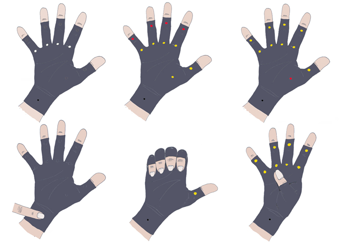

Arli
Arthritis is an illness which causes inflammation and pain in the joints. It can limit flexibility and make moving painful. A common therapy is hand exercises and wearing gloves, to keep the joint warm. Arli is a new kind of arthritis glove which uses small colored LEDs to provide feedback and information about the hand exercises.
Every light represents a certain joint or joints and can use colors to show if the joint needs to be bend or stretched. Different exercises can be shows due to different color combinations. The lights would also provide notifications to show the user when it has been more than 24, 36 or 48 hours since the last exercises has been done, as a reminder and stimulation to do the exercises frequently.
